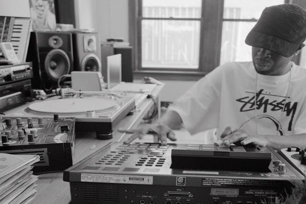
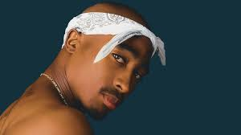
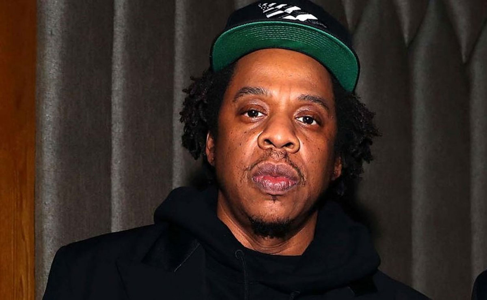

O hip hop é mais do que um gênero musical; trata-se de um movimento cultural que engloba música, dança, arte e expressão social. Surgido nos bairros periféricos de Nova York durante a década de 1970, o hip hop encontrou nos anos 1990 e início dos anos 2000 seu período de maior crescimento e consolidação.
Essa fase é frequentemente chamada de "Era de Ouro", pois foi marcada por inovação artística, diversidade de estilos, sucesso comercial e grande influência cultural.
Durante esse período, o rap tornou-se uma das formas mais importantes de expressão das comunidades urbanas, abordando temas como racismo, desigualdade social, violência, pobreza, política, identidade cultural e resistência. Ao mesmo tempo, conquistou espaço na indústria musical global, transformando seus artistas em referências culturais para milhões de pessoas.
A Evolução do Hip Hop nos Anos 1990 aos anos 2000
Na década de 1990, o hip hop passou por uma transformação significativa. O gênero deixou de ser visto apenas como uma manifestação cultural das periferias e tornou-se uma força dominante na música mundial.
Os avanços tecnológicos na produção musical permitiram a criação de batidas mais elaboradas, utilizando samplers, sintetizadores e técnicas inovadoras de mixagem. Além disso, o surgimento de gravadoras especializadas em rap ajudou a ampliar a distribuição dos álbuns e a popularidade dos artistas.

Durante esse período, diferentes regiões dos Estados Unidos desenvolveram estilos próprios. A Costa Leste, especialmente Nova York, valorizava letras complexas e narrativas detalhadas. Já a Costa Oeste, liderada pela Califórnia, destacou-se pelo som mais pesado e influenciado pelo G-Funk, caracterizado por batidas lentas e linhas de baixo marcantes.
explore a história
duas décadas. uma cultura.
clique em uma época e descubra como o hip hop evoluiu
1990-1999 +
A era das lendas
Os anos 90 marcaram a consolidação do rap, com estilos regionais, letras marcantes e artistas que influenciaram gerações.
Conheça: Tupac Shakur, The Notorious B.I.G. e Nas.
Características: Boom bap, G-Funk, batalhas de rap e expansão da cultura urbana.
2000-2009 +
O hip hop conquista o mundo
Nos anos 2000, o rap ampliou seu alcance internacional, enquanto videoclipes, novas produções musicais e a moda streetwear ganharam força.
Conheça: Eminem, 50 Cent e OutKast.
Características: Expansão comercial, videoclipes marcantes, sneakers e roupas oversized.
A rivalidade entre Costa Leste e Costa Oeste
Um dos acontecimentos mais marcantes da história do hip hop foi a rivalidade entre artistas da Costa Leste e da Costa Oeste dos Estados Unidos.
A Costa Oeste era representada principalmente por Tupac Shakur e pela gravadora Death Row Records. Já a Costa Leste tinha como principal representante The Notorious B.I.G., ligado à Bad Boy Records.
O conflito envolveu músicas, entrevistas e disputas comerciais, tornando-se uma rivalidade intensa que gerou tensão em toda a indústria musical. Os assassinatos de Tupac em 1996 e de The Notorious B.I.G. em 1997 chocaram o mundo e marcaram profundamente a história do rap.
Após essas tragédias, muitos artistas passaram a defender a união dentro do movimento hip hop e o foco na produção artística.
Os Principais Artistas da Época
Tupac Shakur

Tupac foi um dos artistas mais influentes da história da música. Suas letras abordavam problemas sociais, desigualdade racial, violência urbana e experiências pessoais. Ele conseguia combinar mensagens políticas com sucessos comerciais, tornando-se um símbolo de resistência e autenticidade.
Entre suas músicas mais conhecidas estão "California Love", "Changes" e "Dear Mama".
The Notorious B.I.G.
Conhecido também como Biggie Smalls, destacou-se por sua habilidade narrativa e por retratar a realidade das ruas de Nova York. Seu estilo influenciou diversas gerações de rappers.
Canções como "Juicy", "Big Poppa" e "Hypnotize" são consideradas clássicos do hip hop.
Nas
Nas é amplamente reconhecido pela qualidade poética de suas letras. Seu álbum de estreia, Illmatic, é frequentemente apontado como um dos melhores discos de rap já produzidos.
Suas músicas exploram questões sociais, desigualdade econômica e a vida nos bairros periféricos de Nova York.
Jay-Z

Além do sucesso musical, Jay-Z tornou-se um dos empresários mais bem-sucedidos da indústria do entretenimento. Suas letras frequentemente tratam de ambição, empreendedorismo e superação.
Ele ajudou a transformar o rap em um fenômeno comercial global.
Eminem

Eminem surgiu no final dos anos 1990 e rapidamente conquistou o público por sua técnica, velocidade e criatividade. Sua ascensão também foi importante por ampliar o alcance do hip hop para novos públicos ao redor do mundo.
Seu álbum The Marshall Mathers LP tornou-se um dos discos de rap mais vendidos da história.